データリーダツール
データリーダ
サマリー
データリーダ は、データ情報ウィンドウを使用して選択したデータポイントに関する情報をグラフに表示する探索ツールです。基本的には、プロットされたデータポイントに関連してワークシートに含まれているものはすべて、データ情報ウィンドウに表示されます。これには、座標値、列ヘッダー、またはセル埋め込みイメージが含まれます。さらに、カスタムフォーマット（日付/時刻、緯度/経度など）を使用して数値を表示したり、ウィンドウの背景色を変更したり、ウィンドウタイトルを追加するなど、ウィンドウをカスタマイズすることもできます。
は、データ情報ウィンドウを使用して選択したデータポイントに関する情報をグラフに表示する探索ツールです。基本的には、プロットされたデータポイントに関連してワークシートに含まれているものはすべて、データ情報ウィンドウに表示されます。これには、座標値、列ヘッダー、またはセル埋め込みイメージが含まれます。さらに、カスタムフォーマット（日付/時刻、緯度/経度など）を使用して数値を表示したり、ウィンドウの背景色を変更したり、ウィンドウタイトルを追加するなど、ウィンドウをカスタマイズすることもできます。
- 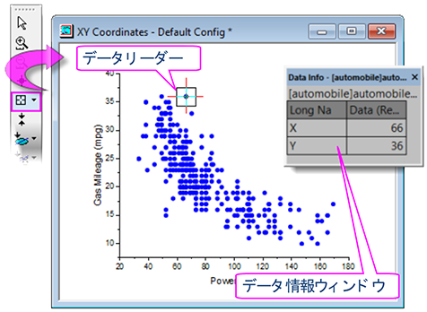
必要なOriginのバージョン: Origin 2019 以降
 |
Origin 2019から、2Dグラフのデータポイント上にカーソルを合わせるだけでデータの座標値を表示することができます。このデータポイントのツールチップは高度にカスタマイズ可能で、データ情報ウィンドウの機能と似ています。詳細は、
データポイントのツールチップ
をご参照ください。 |
学習する項目
このチュートリアルでは、以下の項目について説明します。
- データ情報ウィンドウを使用してグラフのデータポイントを読み取る
- データ情報ウィンドウの内容をカスタマイズし、画像の表示を含める(チュートリアル1)。
- データ情報ウィンドウの内容をカスタマイズし、カスタムフォーマットを使用して数値データを表示する(チュートリアル2)。
チュートリアル1:
基本の使用方法
- メインメニューのファイル：開くと選択して<Origin Folder>\Samples\Data
Exploration にあるAlkanes.opj を開きます。
- Book1のSheet1にあるD列を選択し、メインメニューの作図：散布図：散布図を選択し、グラフを作成します。
- ツールツールバーからデータリーダボタンをクリックし、作成したグラフ内のIsobutaneデータポイントをクリックします。
データ情報ウィンドウに、選択したデータポイントのX、Y座標が表示されます。
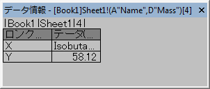
- データ情報ウィンドウ内で右クリックし、メニューからユーザ設定を選択すると、データ情報レポート設定ダイアログが開きます。
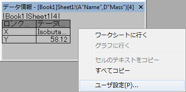
- データ情報ウィンドウからブック名とシート名を削除するには、レポートタイトル のドロップダウンリストからなしを選択します。
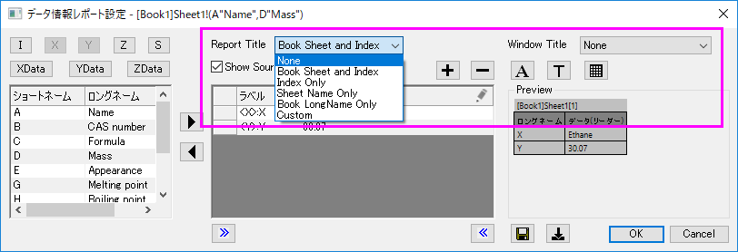
- ダイアログの中央部分で、<X>をクリックしてX座標を削除し、削除ボタンをクリックします。<Y>についても同様にします。
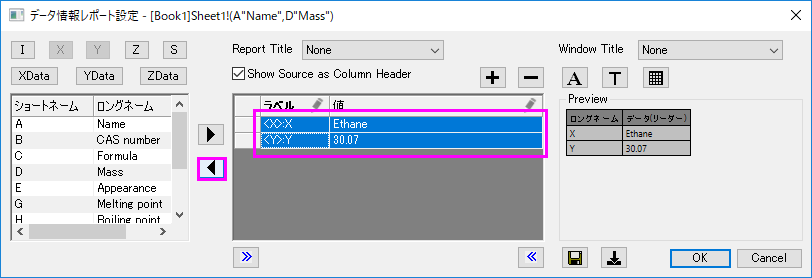
- ダイアログ左上の角にあるXデータ 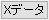ボタンとYデータ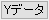ボタンをクリックしてXとYの元データを追加します。プレビューでロングネームのデータセットが使用されているのを確認できます。
- データ情報ウィンドウに加えることができるすべてのワークシート列が、左側のパネルに表示されています。B、C、E、G、H列を選択して選択ボタンを押すと、中央パネルにデータが追加されます。このとき、プレビューにはウィンドウに2つの列があることが示されています。
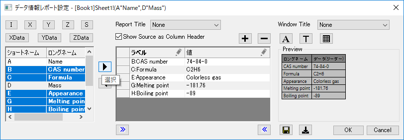
- 列の追加ボタンを押して、表に3つ目の列を追加します。3列目のタイトルの鉛筆アイコンをクリックして列の設定ダイアログを開き、タイプ
= シングルセル、ソース = J "Ball and stick model」と設定します。列幅
= 20と設定してOKをクリックします。1、2列目のタイトルの鉛筆アイコンをクリックして、それぞれ列幅
= 15、20と設定します。
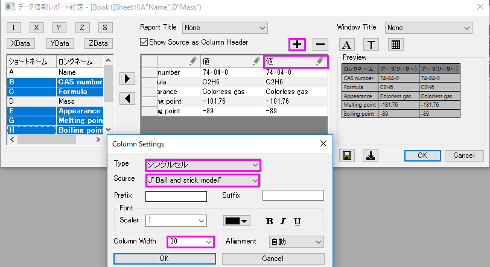
- フォントボタンを押して「ツールチップのフォント」ダイアログを開きます。最小フォントサイズと最大フォントサイズをそれぞれ10、16と設定します。この設定により、データ情報ウィンドウのサイズが変更された時のフォントサイズを自動制御します。これにより、データ情報テーブルのサイズ変更も制限されることに注意してください。フォントの色を暗い青に設定し、OKをクリックします。背景ボタンを押して背景
= 白と設定しOKをクリックします。
- テーマの保存ボタンを押して、メニューから保存先 <Graph>を選択します。これにより、データ情報ダイアログの設定がアクティブなグラフに保存されます。OKを押してデータ情報レポート設定ダイアログを閉じます。
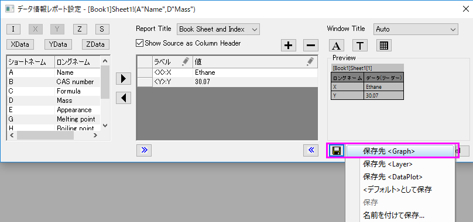
- ウィンドウの角をドラッグしてデータ情報ウィンドウのサイズを変更してみましょう。今回の設定により、フォントサイズやテーブルのサイズが制御されているのがわかります。
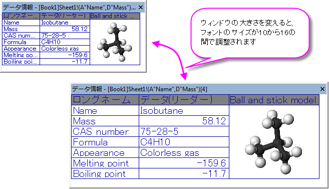
チュートリアル2:
カスタム数値表示フォーマット
このチュートリアルでは、データ情報ウィンドウに表示される数値データにカスタム表示形式を適用する方法を学習します。
- F11キーを押してラーニングセンターを開き、グラフサンプルタブにて"Google Map
Temperature"を検索します。サンプル上でダブルクリックするとプロジェクトが開きます。アメリカ大陸の地図に1月の平均気温の等高線プロットを重ねたグラフが表示されます。
- 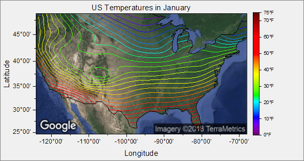
- マップ+等高線プロットをダブルクリックして、作図の詳細ダイアログボックスを開きます。カラーマップ/等高線タブを開き、データポイント表示にチェックを入れてOKを押します。表示されたプロットは、地図上の1月の気温データが記録されている米国の都市です。すべての点を見やすくするために、ウィンドウのサイズを拡大します。
- ツールバーからデータリーダツールを選択し（ヒント：データカーソル
 とデータハイライター
とデータハイライター
 がスプリットボタンに表示されます）、地図上の散布点の一つをクリックします。データ情報ウィンドウが開き、次の画像のように表示されます。
がスプリットボタンに表示されます）、地図上の散布点の一つをクリックします。データ情報ウィンドウが開き、次の画像のように表示されます。
- 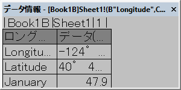
表示される情報はユーザフレンドリーではありませんので、データ情報ウィンドウをカスタマイズしてより有用な情報を表示します。
- データ情報ウィンドウ上でダブルクリックしてデータ情報レポート設定ダイアログボックスを開きます。中央パネルのName列の下にある<X>、<Y>、<Z>について、
1つずつ削除ボタンを押して中央パネルから削除します。
- ダイアログ左上角の、、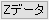ボタンをクリックして、ロングネーム列でラベルされたX、Y、Zの元データを中央パネルに追加します。設定の結果はダイアログボックス右側のプレビューにて確認できます。
- 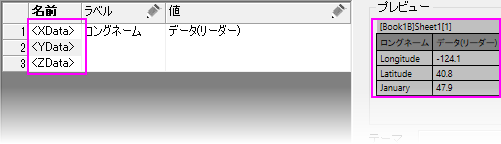
現在、データ情報には2つの列が表示されています。1つ目はロングネーム列（Longitude、Latitude、January）2つ目は
Longitude、Latitude、Januaryに関連づけられている数値データの列です。これらの数字に書式を適用して、単純な一般的な10進数として表示されないようにしてみましょう。
- 列の追加ボタンをクリックして3番目の列をデータ情報テーブルに追加し、新しく追加した列の鉛筆アイコンをクリックして列の設定ダイアログボックスを開きます。タイプドロップダウンリストから数値表示形式を選択してOKを押します。
- 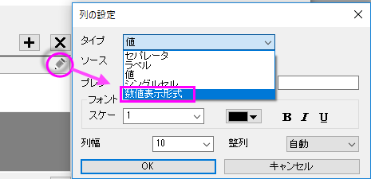
- 数値表示形式見出しの下にある最初のセルをクリックすると、カスタム書式設定オプションの一覧が表示されます。このリストは網羅的ではありませんが、カスタムフォーマットでよく使用されるものが表示されています。このボックスに直接入力してカスタムフォーマットを指定することもできます。
- 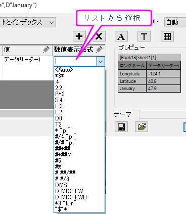
- 最初の行のリストで、次のように入力します（東/西、度ー分と表示されます）：
DM EWB
- 2番目の行のリストで、次のように入力します（北/南、度ー分と表示されます）：
DM NSB
- 3番目の行のリストで次のように入力します（小数点以下1桁+接尾辞文字列「deg F」と表示されます）：
.1 "deg F"
- 列の追加ボタンをクリックしてデータ情報テーブルに列を追加し、新しく追加された列の鉛筆アイコンをクリックして列の設定ダイアログボックスを開きます。タイプをシングルセル、ソースをA
"City"、列幅を30と設定してOKをクリックします。
- テーマの保存ボタンを押して保存先<Graph>を選択し、 現在のデータ情報ウィンドウの設定をグラフウィンドウに保存します。OK
をクリックしてダイアログを閉じます。
- 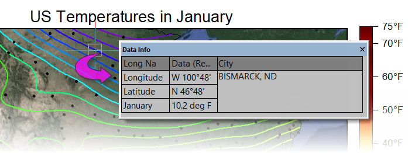